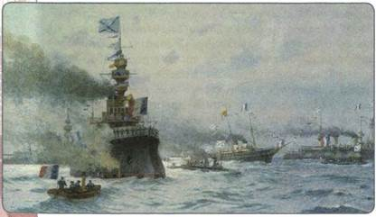
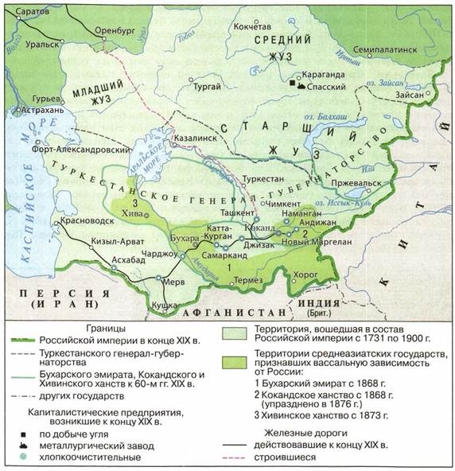
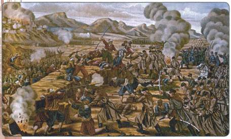
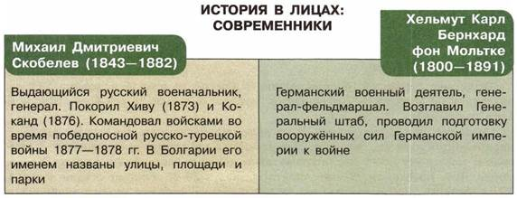

Каковы были важнейшие итоги внешней политики Александра III?
1. Обострение противоречий с Германией
Для внешней политики Александра III были характерны сдержанность, осторожность, стремление избегать войн. Александра III вполне справедливо называли Миротворцем: в период его правления Россия не вела войн. Однако миролюбие Александра III отнюдь не снимало тех проблем, которые возникли в конце царствования его предшественника, Александра II. Напротив, они в ещё большей степени обострились.
Становилось всё яснее, что Германия, которую в России привыкли считать своим самым надёжным союзником в Европе (так же, как раньше Пруссию), буквально на глазах превращалась в опаснейшего противника. Дело в том, что, объединившись, Германия (с 1871 г. стала называться Германской империей) являла собой государство с мощной и очень быстро развивающейся экономикой. Она сразу начала борьбу за расширение своего влияния в мире. Вскоре интересы Германии столкнулись с интересами России.
Германия быстро нашла себе верного союзника — Австро-Венгрию, традиционного противника России на Балканах. В 1882 г. Германия и Австро-Венгрия, к которым присоединилась Италия, заключили между собой тайный договор, получивший название Тройственного союза. Правда, поначалу этот договор имел не антироссийскую, а антифранцузскую направленность. Однако сближение Германии и Австро-Венгрии привело также и к их совместным действиям на Балканах, откуда они в равной степени хотели потеснить Россию.
Вспомните, чем окончилась русско-турецкая война 1877—1878 гг. Как её итоги повлияли на положение славянских народов Османской империи?
На Балканах главным приложением усилий противников России была Болгария, где после освобождения царём был избран Александр Баттенберг — молодой немецкий офицер, племянник супруги Александра II, участник русско-турецкой войны. Через него русское правительство надеялось влиять на болгарскую политику. Однако Баттенберг управлял чрезвычайно неудачно — деспотично и в то же время легкомысленно; поскольку же он считался русским ставленником, подобное правление подрывало престиж России в глазах болгар. В 1886 г. в Болгарии произошёл переворот, в результате которого царём стал австрийский офицер Фердинанд Кобург, подчинивший внешнюю и внутреннюю политику Болгарии интересам Германии и Австро-Венгрии. Подобное развитие событий знаменовало дипломатическое поражение России, резко ослабив её позиции на Балканах. «Союз трёх императоров» окончательно распался.
Соперничество между Россией и Германией на Балканах усугублялось разгоравшимися всё сильнее экономическими противоречиями. Русское правительство, стремясь защитить свою промышленность от иностранной конкуренции, в 1880-е гг. постоянно повышало таможенные пошлины на ввозимую из-за рубежа продукцию. Больше всего от этого страдали немецкие предприниматели, которые буквально рвались на русский рынок. В свою очередь, Германия несколько раз повышала пошлины на сельскохозяйственную продукцию, ввозимую в основном из России, что вызывало страшное неудовольствие русских помещиков. В начале 1890-х гг. это противостояние обострилось так, что получило даже название таможенной войны.
2. Русско-французский союз
В этих условиях Александр III усиленно искал нового союзника. В результате произошло постепенное сближение России с Францией. Франция, разгромленная Германией в 1870—1871 гг., потерявшая в результате этой войны важные в промышленном отношении районы, жаждала отмщения и в то же время боялась нового германского нападения. Вести борьбу с Германией в одиночку было делом безнадёжным, поэтому Россия с её огромными материальными и военными силами воспринималась Францией как идеальный союзник сначала в сдерживании Германии, а в будущем, возможно, и в борьбе с ней. Сближение облегчалось ещё и экономическими отношениями: если Германия пыталась ввозить в Россию товары, подрывавшие тем самым её промышленность, то Франция ввозила капиталы, вкладывая их в развитие прежде всего русской металлургии, что благоприятствовало экономике России. Кроме того, с конца 1880-х гг. русское правительство начало брать во Франции большие займы.
Подготовка к заключению русско-французского союза началась с 1891 г. В этом году французские военные корабли совершили дружественный визит в Россию. В Кронштадте на торжественной встрече эскадры присутствовал сам Александр III. Прошли переговоры начальников генеральных штабов и дипломатов обеих стран. В начале 1893 г. русско-французский союз был заключён. Обе стороны брали на себя конкретные взаимные обязательства на случай нападения на одну из них держав Тройственного союза.
Таким образом, к концу XIX в. практически все великие державы, за исключением Англии, занявшей выжидательную позицию, разошлись по двум враждебным друг другу союзам. Это временно укрепило мир, но грозило в будущем новыми столкновениями.

Прибытие французской эскадры в Кронштадт в 1891 г. Художник М. С. Ткаченко
3. Присоединение Средней Азии
Процесс присоединения к Российской империи территорий Средней Азии начался ещё в царствование Александра II. Этот длительный и сложный процесс состоял из ряда кампаний. Завершился же он в основном в начале правления Александра III, в 1882 г. В Средней Азии России противостояла Англия, которая стремилась подчинить здешние государства своему влиянию. Опасение, что главный противник России получит мощную опору в непосредственной близости от её плохо защищённых южных границ, побуждало её к решительным действиям. Кроме военных соображений, Россию влекли в Среднюю Азию экономические интересы: необходимо было получить новые выгодные рынки сбыта для российской промышленной продукции.

Средняя Азия в XIX в.
Первые столкновения со среднеазиатскими государствами произошли ещё в 1853—1854 гг. В это время Россия начала создавать в Казахстане систему укреплений — так называемые военные линии — для защиты от набегов. Вскоре было принято решение поставить Среднюю Азию под контроль России.
Россия не стремилась к полному покорению среднеазиатских государств. Она добивалась, чтобы их правители признали верховную власть царя прежде всего в вопросах внешней политики, а также свободно пропускали на свои рынки русские товары. На этих условиях им гарантировалась определённая автономия. Именно так произошло с Бухарским эмиратом и Хивинским ханством. Потерпев ряд поражений, они вынуждены были признать свою зависимость от России (в 1868 и 1873 гг. соответственно). То же произошло и с Кокандским ханством, но его правитель вскоре поднял восстание. После ожесточённых боёв ханство было уничтожено как государственное образование. В 1867 г. все его земли были включены в состав Туркестанского генерал-губернаторства (оно с 1880-х гг. называлось Туркестанский край). После походов войск под командованием генерала М. Д. Скобелева к России были присоединены кочевые туркменские племена, часть которых оказала при этом серьёзное сопротивление.
Завоевание Средней Азии проходило и со стороны Каспийского моря. В 1869 г. войска под командованием Н. Г. Столетова высадились на его восточном берегу и основали город Красноводск. Дальнейшее продвижение на восток встретило упорный отпор со стороны части туркменских племён. Оплотом сопротивления многочисленного племени текинцев стал оазис Геок-Тепе недалеко от города Асхабад (современный г. Ашхабад). Неоднократные попытки овладеть им терпели неудачу. Позже командующим русскими войсками был назначен М. Д. Скобелев. Для бесперебойного снабжения русских войск была проложена железнодорожная ветка от Красноводска в сторону Геок-Тепе. Всё это позволило успешно провести намеченную операцию. 12 января 1881 г. после ожесточённого боя русские войска овладели Геок-Тепе, а через неделю — Асхабадом. Три года спустя, после взятия города Мерва в 1884 г., туркменская племенная знать приняла присягу на подданство России. Так было завершено присоединение Средней Азии к России.

Бой отряда М. Д. Скобелева с туркменскими воинами под Геок-Тепе
Невозможно дать однозначную оценку последствиям присоединения Средней Азии к России. Этот длительный процесс сопровождался войнами, разорением, насилием над мирным населением. Однако нужно иметь в виду, что Средняя Азия вряд ли могла сохранить тогда независимость. Если бы Россия не присоединила её, то здесь установилось бы владычество Англии, что было бы ничуть не легче для местного населения.
Следует отметить, что русское правительство проводило достаточно гибкую политику. Часть завоёванных земель управлялась непосредственно русскими военными и чиновниками; Хива и Бухара сохранили своих правителей, поставленных под строгий контроль. Российские власти, как правило, избегали грубой ломки традиционных социальных отношений между местными жителями, не вмешивались в их культуру и религиозные верования, стремились поладить с местной верхушкой, найти в ней опору для своей политики. Правда, в Средней Азии в ряде случаев была урезана совершенно непомерная власть крупных землевладельцев над населением. После присоединения этих территорий к России прекратились внутренние усобицы; постепенно уходила в прошлое кровная месть; было отменено рабство. Установление тесных культурных связей с Россией сыграло свою положительную роль в духовном развитии народов Средней Азии.
ПОДВЕДЁМ ИТОГИ
В период правления Александра III Россия сохраняла роль великой мировой державы и поддерживала мир на своих границах. Однако между европейскими государствами существовали острые внешнеполитические противоречия, их Александру III удалось лишь временно погасить, но не устранить окончательно. Произошло размежевание великих держав, образовались враждебные друг другу военно-политические блоки.

Работаем с картой
Найдите на карте территорию Хивинского и Кокандского ханств, Бухарского эмирата, Туркестанского генерал-губернаторства.
Вопросы и задания для работы с текстом параграфа
1. Почему в 1880-х гг. обострились противоречия между Россией и Германией? 2. Какие противоречия в 1880—1890-е гг. существовали между Россией и Германией в сфере политики на Балканах, а какие — в экономической сфере? 3. Перечислите державы, которые подписали Тройственный союз. Каково значение этого союза? 4. В чём состояли причины русско-французского сближения? Каковы были условия русско-французского договора? 5. Назовите причины продвижения России в Среднюю Азию. 6. Опираясь на ранее изученные сведения и данные параграфа, перечислите основные моменты продвижения России в Среднюю Азию в 1860—1880-е гг. Составьте таблицу в тетради.
Думаем, сравниваем, размышляем
1. Влиял ли на политику России по отношению к Балканам религиозный фактор? Объясните своё мнение. 2. Каково значение присоединения Средней Азии к России? Дайте оценку этому событию. 3. Вспомните, как на протяжении XIX в. складывались отношения между Россией и Германией, Россией и Австрией (Австро-Венгрией). Считаете ли вы, что обострение этих отношений в конце XIX в. было неизбежно? 4. Насколько был оправдан союз между Россией и Францией? Какой из двух договаривающихся сторон он был более выгоден?